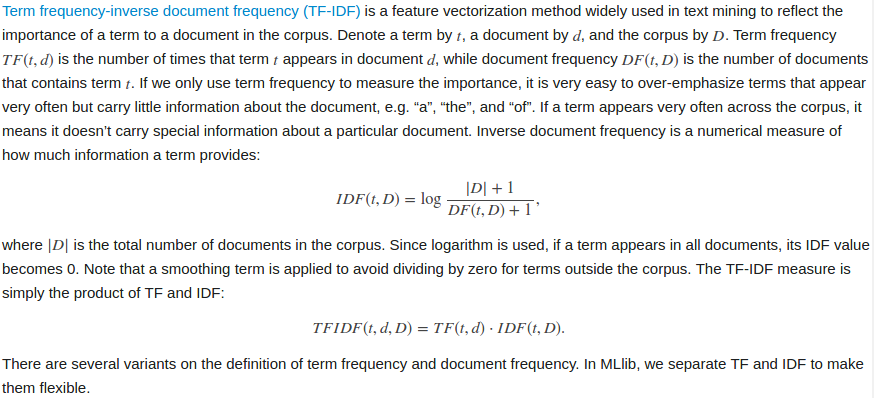

TF-IDF
Term frequency-inverse document frequency (TF-IDF) is a feature vectorization method widely used in text mining to reflect the importance of a term to a document in the corpus.
Introduction

SparkML
HashingTF

IDF
IDF is an Estimator which is fit on a dataset and produces an IDFModel. The IDFModel takes feature vectors (generally created from HashingTF or CountVectorizer) and scales each column. Intuitively, it down-weights columns which appear frequently in a corpus.
class TFIDFAlgorithm {
var test = "Test class"
}
object TFIDFAlgorithm{
def main(args: Array[String]) {
println("I miss you !")
println(new TFIDFAlgorithm().test)
println("It is a program about tf-idf algorithm. ")
val spark = SparkSession.builder().appName("TF-IDF Test Program")
.master("local[*]").getOrCreate()
//初始化文档，0123表示不同文档标识
val sentenceData = spark.createDataFrame(Seq(
(0,"this is a test test"),
(1,"this is another example"),
(2,"hello world spark"),
(3,"it is a sunny day but I get up late")
)).toDF("label","sentence")
sentenceData.show()
//初始化英文分词工具
val tokenizer = new Tokenizer().setInputCol("sentence")
.setOutputCol("words")
val wordsData = tokenizer.transform(sentenceData)
wordsData.show()
//初始化hashingTF用来转换文字为向量。
val hashingTF = new HashingTF().setInputCol("words")
//setNumFeatures用来设置向量值的范围，设置大一些防止hash冲突
.setOutputCol("rawFeatures").setNumFeatures(1000)
val featurizedData = hashingTF.transform(wordsData)
featurizedData.select("label","rawFeatures").foreach(r => println(r))
//初始化idf工具计算idf值
val idf = new IDF().setInputCol("rawFeatures").setOutputCol("features")
val idfModel = idf.fit(featurizedData)
val rescaleData = idfModel.transform(featurizedData)
rescaleData.select("label","features").take(4).foreach(println)
}
}
/*
Print rescaleData
[文档标识,(特征值范围,[每个词的特征值 按特征值大小排序],[最后的权值])]
[0,(1000,[170,281,373,586],[0.5108256237659907,0.22314355131420976,0.5108256237659907,1.8325814637483102])]
[1,(1000,[243,281,373,779],[0.9162907318741551,0.22314355131420976,0.5108256237659907,0.9162907318741551])]
[2,(1000,[48,105,150],[0.9162907318741551,0.9162907318741551,0.9162907318741551])]
[3,(1000,[79,83,128,170,281,318,329,495,605,959],[0.9162907318741551,0.9162907318741551,0.9162907318741551,0.5108256237659907,0.22314355131420976,0.9162907318741551,0.9162907318741551,0.9162907318741551,0.9162907318741551,0.9162907318741551])]
*/